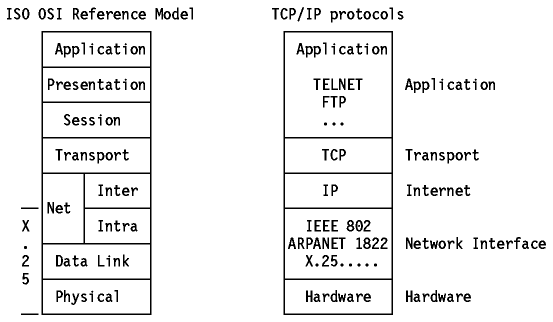
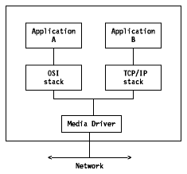
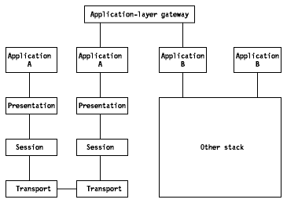

Table of Contents
Table of Contents  Classical
IP over ATM versus LAN Emulation
Classical
IP over ATM versus LAN EmulationTable of Contents Classical
IP over ATM versus LAN Emulation
Figure - TCP/IP and OSI shows an
attempt to position the different TCP/IP and OSI architectural layers, but be
aware of the basic differences discussed below.

Figure: TCP/IP and OSI - Functional positioning of the
layers.
One can only functionally position the internet model to the ISO OSI model because basic differences exist such as:
The ISO view, on the other hand, treats layers as rather narrow functional groups, attempting to force modularity by requiring additional layers for additional functions.
In the TCP/IP protocols, a given protocol can be used by other protocols within the same layer, whereas in the OSI model two separate layers would be defined in such circumstances. Examples of such "horizontal dependencies" are FTP, which uses the same common representation as TELNET on the "application layer," and ICMP, which uses IP for sending its datagrams on the "internetwork" layer.
In practice, what we are discussing here is the difference between a de jure standard, OSI, and a de facto standard, TCP/IP. The focus in the TCP/IP world is on agreeing on a protocol standard which can be made to work in diverse heterogeneous networks. The focus in the OSI world has always been more on the standard than the implementation of the standard.
Another way to see this is that most of the internet protocols have first been developed (coded and tested), before being "described" in an RFC (usually by the implementer) which clearly shows the feasibility of the protocols.
The Department of Defense (DoD), funder of the original ARPANET research, made a statement on OSI in January '88, based on the Government OSI Profile (GOSIP) of April 22, 1987.
The following is an excerpt from the statement, which is published in RFC 1039 - A DoD Statement on OSI: "... It is intended to adopt the OSI protocols as a full co-standard with the DoD protocols when GOSIP is formally approved as a Federal Information Processing Standard. Two years thereafter, the OSI protocols would become the sole mandatory interoperable protocol suite; however, a capability for interoperation with DoD protocols would be provided for the expected life of systems supporting the DoD protocols. ..."
A lot of study has already been done by the internet world on possible transitions and coexistence of the protocols. The following list is a series of RFCs already issued for that purpose:
If your goal is TCP/IP-OSI coexistence, with an eye toward eventually going to pure OSI, you basically have five choices, which fall into two general categories: protocol-based and services-based.
Protocol-based approaches include dual stacks, application-layer gateways and transport-layer gateways. Services-based approaches include transport-service bridges and network tunnels.
The simplest way to integrate TCP/IP and OSI is to put
both protocol stacks in every machine on the network.

Figure: Dual Stacks
Although this is a relatively straightforward approach, it involves a fundamental drawback: two networks will be running over the same set of wires, but the two sets of protocol cannot interoperate. Users are forced to choose between them. This disadvantage of having two separate networks can be an advantage. Those users who want to use TCP/IP can use TCP/IP, those who want to use OSI can use OSI. Another advantage is that an existing TCP/IP network will not be disturbed. But, dual stacks are memory-intensive, and they have to be put on every machine on the TCP/IP-OSI networks.
This approach eliminates a major drawback of dual
stacks (lack of application internetworking). The application-layer gateways
convert protocol data units (PDU) from one stack's application protocol to the
other's. With application-layer gateways it is possible to communicate from any
TCP/IP system to any OSI system. It is not necessary to choose between
protocols, because either application protocol will work on either stack.

Figure: Application-Layer Gateway Node
Another advantage of application-layer gateways is that you do not have to add anything to, or otherwise modify, the end systems. This is because the application-layer gateway (which includes both protocol stacks) sits between the systems and handles all of the protocol conversion. But you will often lose functionality in the conversion from one application protocol to another because of imperfect mapping between the two protocols, mainly when going from OSI to TCP/IP applications. This is because OSI applications have richer functionalities. Another disadvantage of application-layer gateways is that they produce bottlenecks that will cause performance degradation if your gateway is not powerful enough.
CLNP stands for ConnectionLess Network Protocol (see figure above).
If you have an environment with the TCP transport protocol on one side and the OSI TP4 transport protocol on the other, you need a software mechanism that dynamically translates TCP packets into TP4 packets. This approach is considered to be wrong because no applications support TCP on one end and TP4 on the other, and because the addresses change on either part of the gateway, which involves loss of directories services.
The three approaches examined so far focus on protocol conversion. However, it is possible to virtually ignore the protocol itself and to concentrate on emulating services. This is where transport-service bridges and network tunnels come into play.
ISODE stands for International Standards Organization Development Environment. It is a publicly available collection of library routines and programs that implement OSI upper-layer services.
In a TCP-to-TP4 example, a transport-service bridge would make the TCP service look like a TP4 service. You accomplish this by emulating the TP4 service. With transport-service bridges you can run OSI applications over TCP/IP networks. One advantage of this approach is that you can use just one application protocol-OSI. Only the underlying layers need change between the two environments. A transport-service bridge is essentially a router that copies PDUs, as opposed to translating them. RFC 1006 defines the way to produce OSI transport services on top of TCP. The main disadvantage of this approach is that you do not have end-to-end (source to destination) checksum. In the example of TCP-to-TP4 environment, you have a TCP checksum on the source side of the transport-service bridge and a TP4 checksum on the destination side. Like gateways, transport-service bridges introduce a single point of failure. You can use transport-service bridges not only for TCP/IP-to-OSI implementations but also for OSI-to-OSI integration jobs. For example, OSI includes different transport protocols, such as TP0 for wide area networks and TP4 for local area networks. Transport-service bridges are viable candidates for linking those different OSI transports.
This approach eliminates the single point of failure and gives you end-to-end checksums. Network tunnels are one level down from the transport-service bridge approach. Instead of transport-service emulation, they use packet-level service emulation. Network tunnels operate at the network layer instead of at the transport layer. They encapsulate OSI CLNP packets in IP packets and run them over IP networks. Network tunnels are essentially CLNP routers.
Network tunnels provide end-to-end checksums, a high degree of transparency, but they require OSI CLNP-based networks and are difficult to implement.
Table of Contents  Data
Link Switching: Switch-to-Switch Protocol
Data
Link Switching: Switch-to-Switch Protocol